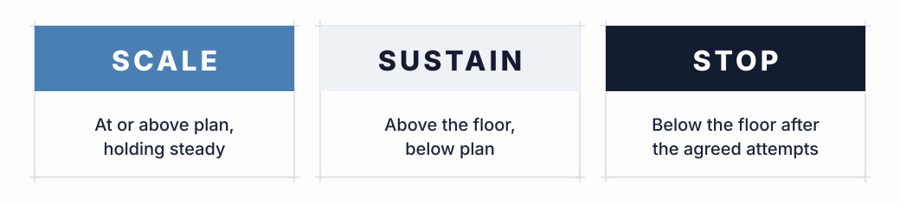

Budget adherence as a review criterion
Most reviews of AI spend ask only whether spend stayed within the allowance, and treat a yes as success. A task class can come in under budget because it ran less than expected, because it was routed to a cheaper model that failed more often, or because people stopped using its output. A spend report records all three as underspend although each indicates a different operating problem.
The reverse also holds: a task class that went over budget while its yield per dollar held or improved may be the best candidate for more investment. The budget is a constraint (the fence from the Reframe page), and Review assesses what grew inside it.
Three decisions, each with its evidence
For each task class Review ends in one of three decisions, each needing different evidence, and that evidence should come from the measures the plan committed to rather than from measures chosen after the results are in.
- Scale. Applies when yield per dollar is at or above the planned level and holds steady across several periods, with completion rates not falling as volume grows and no single expensive run carrying the average. Because scaling multiplies whatever the task class does, the evidence has to show that it does the right thing consistently.
- Sustain. Applies when yield is above the floor but below plan, or above plan on too little data to trust. The class keeps running with its attribution in place, a named next lever to try and a date set for the next review.
- Stop. Applies when yield stays below the floor for the period the plan stated after the agreed number of attempts to improve it, or when the work finishes and is kept but the value hypothesis did not hold because nobody downstream used it. Stopping requires the least evidence to justify, although existing commitments make it the hardest of the three decisions to carry out.

Separating price risk from yield risk
Before any decision on a task class that missed its plan, the review has to establish whether it missed on price or on yield, applying the diagnostic rule from the Manage page over the review period in the same way it applies to a single spike. If cost rose while yield held, the work is converting and the price assumption broke, which calls for the routing, caching and rate levers and is rarely a reason to stop. If cost rose and yield fell, the work is not converting, and a cheaper model will not change that.
Treating the two as one can stop a task class that worked because its rates went up, or scale one that does not work because a discount made it look cheap.
By the time a task class reaches review it has a team, a workflow and people who rely on it, so settling what counts as failure at that point is slow and uncomfortable. The plan set the floor and the time allowed before anyone had anything to defend, which leaves Review to check the result against them.
What a stopped task class contributes
Spend on a task class that was stopped on evidence still produces a finding, since the stop establishes that a certain kind of work, done a certain way, did not convert at an acceptable rate; the next plan can use that information, and the stop frees budget for the classes that did convert. If no task class is stopped, the same budget is spread across a growing volume of work while the evidence available for each class diminishes.
Feeding the result into the next plan
The output of Review is the input to the next Plan: updated baseline cards, floors adjusted by what was observed rather than what was guessed, task classes added or removed, and the next lever named for each class that is being sustained. Each turn adds an observation to the initial estimates, and repeated turns build the measurements identified as missing on the Open Problem page.
Claim status. This operating loop is specified, not yet validated at scale. The decisions follow from the measures defined earlier on this hub, and the thresholds that would separate scale from sustain from stop for a given task class are still to be measured, which running the operating loop would do.
GO DEEPER: tail concentration and the scale decision
Agentic workloads tend to be tail-heavy, with a few runs that loop far longer than the rest carrying a large share of total spend, so a healthy-looking average yield per dollar can hide a task class whose median run converts well and whose worst runs burn most of the budget. The distribution, as well as the mean, should therefore be examined before scaling. If the tail is driving cost, a stop rule or a cost detector on the agent loop is often a better next step than more volume, because scaling multiplies the tail along with everything else.